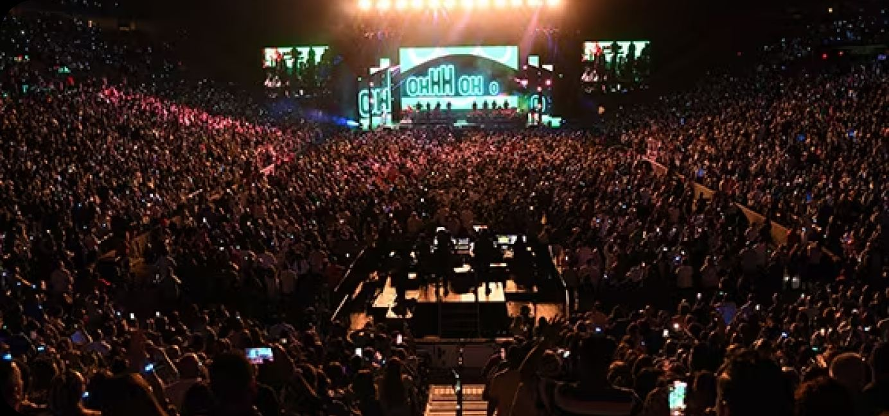

Hoja de contactos / Rollo 04
Edición y video
Campañas y marcas en Harris Media Group

Montaje y rodaje para campañas políticas y de marca en inglés y en español: spots, versiones para redes y cobertura de eventos.
- 10+años en artes visuales
- 2idiomas de trabajo
- 3formatos por pieza
El encargo
En campaña el material llega tarde y la fecha de salida no se mueve. Mi trabajo es convertir horas de grabación en piezas cortas que se entiendan sin sonido y funcionen en cada formato.
Lo que hice
- Spots de 15, 30 y 60 segundos para televisión y digital.
- Versiones verticales y cuadradas para redes, con subtítulos quemados.
- Entrevistas y testimonios: selección de respuestas, ritmo y corrección de color.
- Rodaje en eventos y material de apoyo para el equipo creativo.
Decisiones
1
Primero sin sonido
Reviso cada corte en silencio: en redes la mayoría lo ve así.
2
Dos idiomas, dos ritmos
Una frase en español dura más; ajusto el corte en lugar de acelerar la voz.
3
Entregas por formato
Exporto cada pieza en horizontal, vertical y cuadrado desde la misma línea de tiempo.
Rollo 04 completo
pasa la lupa
EG 2026 · ROLLO 04 · VIDEO24 ▸24A25 ▸25A26 ▸26A27 ▸27A28 ▸28A29 ▸29A
Agrega aquí tu reel y tus piezas: pega el enlace de Vimeo o YouTube en datos.py.
Siguiente rollo · 01Harris Media Group